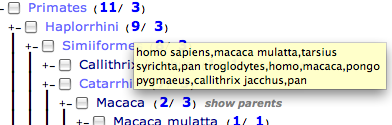
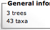

Root | +- Canidae | +- Canis | | +- Canis lupus | +- Vulpes | +- Lycaon
Dans le cadre d'un TER de fin d'étude (Master 2 Informatique), nous avons développé un projet permettant d'aider les biologistes à manipuler des collections d'arbres phylogénétiques. Cette application ce nomme PhyloExplorer.
Vous trouverez dans ce rapport :
une présentation du contexte du projet : présentation de la phylogénie et de la taxonomie, explication de l'intérêt du NCBI,
une documentation technique destinée aux développeurs et présentant la structure interne du projet,
un manuel d'installation à destination des administrateurs système,
un guide d'utilisation du projet PhyloExplorer. Ce guide est destiné aux biologistes et utilisateurs finaux,
un bilan de ce qui a été réalisé et des discussions concernant les évolutions du projet.
La phylogénie est l'étude de la formation et de l'évolution des organismes du vivant en vue d'établir leur parenté. Elle formalise la classification sous forme d'arbres phylogénétiques (équivalent à un arbre généalogique depuis une racine incluant tous les êtres vivants existants ou ayant existé, jusqu'aux individus) dont les noeuds sont appelés taxons. Ainsi, la taxomanie associée définit l'étude et le regroupement de ces organismes en entité (familles, genres, espèces, …) selon leurs critères, caractères et autres similitudes.
Root | +- Canidae | +- Canis | | +- Canis lupus | +- Vulpes | +- Lycaon
Canis lupus, le loup, est un taxon de rang espèce. Canis est le taxon immédiatement supérieur de rang genre et regroupe plusieurs espèces chien, loup, chacal, … Canidae est le taxon immédiatement supérieur de rang famille et regroupe plusieurs genres Canis (chien, loup, chacal), Vulpes (renard), Lycaon (lycaon), …
L'approche phylogénétique actuelle fait appel aux données de la cladistique, mais ses exigences se résument à n'accepter que des taxons monophylétiques, c'est-à-dire correspondant à un clade donné. Elle demande que les taxons soient limités à ceux qui respectent les deux conditions suivantes :
tous les individus du taxon descendent d'un individu ancestral particulier,
tous les descendants de cet ancêtre particulier sont dans le taxon.
On parle alors seulement de taxon monophylétique ou clade. Cette contrainte a amené des modifications fondamentales de la classification scientifique. Ainsi les dinosaures n'ont pas disparu, la systématique moderne inclut les oiseaux dans le groupement « dinosaures ».
Par ailleurs, d'importants progrès en génomique ont été faits grâce à l'analyse génétique automatique et le développement des outils/modèles informatiques. Ils imposent et permettent la redéfinition de certaines espèces ou groupes d'espèces. Ces changements nécessitent donc une meilleure connaissance et suivi des espèces, d'où l'évolution de la phylogénie.
Le NCBI National Center for Biotechnology Information est un centre d'informations sur les biotechnologies établi en 1988. Le site du NCBI propose un ensemble d'outils et de bases de données sur la biologie, voir http://www.ncbi.nlm.nih.gov/sites/entrez?db=taxonomy. Il est considéré comme une référence pour la recherche en phylogénie et en ce qui nous concerne, on retiendra la partie taxonomy du site comme référence de départ pour le projet PhyloExplorer.
Dans un premier temps, on utilisera la base de données taxonomique à disposition du public pour créer notre structure conforme à la phylogénie en vigueur. Dans un second temps, les fonctionnalités de bases seront calquées sur la gestion d'arbres phylogénétiques en ligne. Et enfin, le site permettra de valider les résultats obtenus lors du développement de notre projet.
Comme tout site de recherche, le NCBI propose beaucoup d'informations via une interface chargée et peu adaptée au travail personnalisé. La navigation sur un arbre apparaît assez fastidieuse et les informations taxonomiques, certes complètes, deviennent vite illisibles. En conclusion, l'ergonomie ne sera pas retenue et une interface mieux adaptée devra être mise en place pour faciliter une interaction plus soutenue avec l'utilisateur.
En perpétuel remaniement grâce/à cause de l'avancée des nouvelles techniques moléculaires et génétiques, les chercheurs ont besoin d'outils concis pour : la visualisation, l'analyse, la modification, la confrontation et le partage d'informations.
L'objectif principal de ce projet est de pouvoir travailler sur sa propre collection d'arbres et d'appliquer les fonctionnalités suivantes :
parcourir et visualiser une collection d'arbres,
vérifier la conformité des structures d'arbres et la validité des taxons,
effectuer des requêtes sur une collection (tri sur le nombre et/ou la présence de taxons),
filtrer une collection (ne garder que les sous-arbres pertinents),
produire des statistiques (distribution des taxons et arbres dans une collection).
Les seules exigences interviennent au niveau des formats d'entrée et sortie du projet. Ces derniers prennent en compte une collection d'arbres. On cite phylip, newick, nexus sous forme de fichier.nwk, et la banque de données stockée dans un fichier.csv.
((homo, rattus), bos ,(pan,mus));
L'arbre est défini entre parenthèses comme suit (arbre); ainsi que chaque groupe de taxons (frère 1, frère 2);. On retrouve aussi les niveaux de profondeur de la façon suivante (1,(2,(3,3)));. Si l'on applique à l'exemple précédent, on a 3 frères qui sont (homo, rattus), bos et (pan,mus), et 2 niveaux de profondeur.
#nexus begin trees; Tree 1 = ((homo, rattus), bos ,(pan,mus)); Tree 2 = (pan,mus); Tree 3 = ((homo,rats),pan); Tree 4 = (((((homo,pan),macaca),ratus),dasypus),monodelphi); end;
Le format nexus permet de structurer une collection d'arbres de façon explicite. Il supporte l'ajout d'annotations sous forme de commentaires.
id | nom taxon | | type | 9611 | Canis | | scientific name | 9612 | Canis lupus | | scientific name | 9612 | gray wolf | | genbank common name | 9614 | coyote | | genbank common name | 9615 | Canis canis | | synonym |
Il s'agit d'une nomenclature communément utilisée. L'identifiant permet de retrouver de façon unique un taxon et trouver toutes les informations associées à l'aide de séparateurs définis.
Tout le projet PhyloExplorer repose sur le langage Python. Ce langage a été choisi pour sa licence (libre), sa portabilité (il est multiplateforme), sa robustesse, et sa syntaxe simple et claire. La facilité avec laquel il manipule les chaines de caractères a fait pencher la balance en sa faveur. Enfin, une bibliothèque python sur le traitement d'arbres phylogénétiques avait déjà été créée par l'un des auteurs : la base était déjà faite.
Apache a été envisagé mais nous voulions un serveur web simple et autonome ; or le mod_python d'apache n'est pas trivial à installer et à configurer. Nous nous sommes donc tournés vers CherryPy qui est un "framework HTTP orienté objet". Ainsi, l'installation était grandement facilitée et une utilisation "standalone" pouvait être envisagée.
Notre but étant de créer l'aborescence du NCBI à partir d'une liste de taxons, il nous fallait une bibliothèque de gestion de graphes. Nous utilisons pour cela NetworkX. Entièrement écrite en python, cette bibliothèque multiplateforme s'installe très facilement et est relativement puissante.
Le moteur de templates a été attribué à Pleet. Une bibliothèque python écrite par l'un des auteurs permettant d'embarquer du code python dans du HTML. Cette bibliothèque est très simple, rapide et fait bien son travail.
Nous avons utilisé Google Code. Ce gestionnaire de projet permet de gérer très simplement des petits projets en mettant à disposition un système de wiki, un gestionnaire de bugs et un gestionnaire de version (subversion).
Nous n'avons pas voulu enfermer PhyloExplorer dans une utilisation particulière (ici le service web). C'est pourquoi PhyloExplorer est structuré en plusieurs parties :
PhyloCore : une batterie de classes et de méthodes qui manipulent les collections d'arbres phylogénétiques et dialoguent avec la base de données du NCBI.
PhyloWeb : comprenant un serveur web légé et autonome ainsi qu'un ensemble de templates.
Cette distinction dans la structure permet aux développeurs de créer d'autres applications en se servant de la même base (PhyloCore). Des scripts, pipelines ou encore des applications QT peuvent être créés à moindre coût.
PhyloCore regroupe trois classes (TaxanomyReference, TreeCollection et PhylogeneticTree) et une bibliothèque de gestion d'arbres phylogénétiques : Phylogelib.
Phylogelib est une bibliothèque python qui permet de manipuler des arbres phylogénétiques. Très rapide, elle se contente de traiter des chaines de caractères au format newick (on évite ainsi la lourde gestion de graphes).
PhyloExplorer utilise la base de données du NCBI comme base d'information. Cette base de données est accessible à l'adresse : ftp://ftp.ncbi.nih.gov/pub/taxonomy/taxdump.tar.gz. Cette archive comprend plusieurs images de la base du NCBI. Celles qui nous intéressent sont names.dump et nodes.dump. Ces images nous permettent de récupérer :
l'id
le nom (scientifique)
le nom du parent
l'homonyme auquel il se rapporte
la liste de ses parents
la liste de ses synonymes
la liste de ses noms communs.
Le problème réside dans le fait que toutes ces informations sont éparpillés entre names.dump et nodes.dump (qui contiennent également beaucoup d'informations qui ne nous sont pas utiles). Nous avons alors effectué une compilation de ces informations et les avons placées dans le fichier taxonomy.csv. Voici sa structure :
id|nom|nom_du_parent|homonyme|liste!des!parents|liste!des!synonymes|liste!des!noms!communs|
Les éléments d'une liste sont séparés par un point d'exclamation. l'id est très important car il permet de générer les liens pointant vers le site du NCBI.
Ainsi, à chaque fois que l'on veut mettre à jour le fichier taxonomy.csv, il faudra lancer cette procédure. Nous avons créé un outil qui l'effectue automatiquement. Il s'appelle preproc.py.
Cet outil téléchargera automatiquement l'image de la base du NCBI, extraira les informations nécessaires et générera le fichier taxonomy.csv.
|
Note
|
A propos de base de données Dans ce projet, il nous a été demandé de s'affranchir totalement de bases de
données classiques (MySQL, SQLite…) pour charger toute la taxonomie du NCBI
en RAM. Cependant, pour plus de clareté (et par habitude ?) nous continuerons
de parler de base de données du NCBI |
Cette classe permet d'interagir avec la base du NCBI et plus particulièrement avec le fichier taxonomy.csv qu'il prend en paramètre.
Cette classe est incluse dans toutes les classes de PhyloCore.
Cette classe représente une collection d'arbres phylogénétiques. Elle prend en paramètre une collection au format Phylip, Nexus ou Nexus translate. Elle propose des méthodes permettant de manipuler une collection, comme d'effectuer des filtrages et des requêtes. Elle permet également de récupérer les statistiques de la collection.
from treecollection import TreeCollection
# Instanciation. On passe une collection au format Nexus en paramètre
mycollection = TreeCollection( open("mycol.tre").read() )
# Récupère la collection
print mycollection.getCollection()
# Combien d'arbres sont dans la collection
print len( mycollection.getCollection() )
# Effectue une requête afin de ne garder que les arbres dont les murinaes
# sont supérieurs à 1
mycollection.query( "{murinae} > 1" )
# Récupère la nouvelle collection
my_new_collection = mycollection.getCollection()
# Efface la requête
mycollection.clearQuery()
# Récupère la collection originelle
mycollection.getCollection()
# Filtrage. On supprime tous les taxons "mus", "pan" et "homo" de la
# collection. Le résultat sera une chaine de caractère au format Nexus.
nexus_string = mycollection.filter( ["mus", "pan", "homo"] )
On voit bien dans cette exemple que la méthode query influera sur la méthode getCollection qui ne renverra alors qu'une partie de la collection. La méthode clearQuery permet d'effacer les effets de la requête.
PhyloExplorer fournit deux types de statistiques. La première présente le nombre d'arbres à n feuilles :
10 feuilles -> 3 arbres 12 feuilles -> 9 arbres 16 feuilles -> 3 arbres 20 feuilles -> 4 arbres 24 feuilles -> 9 arbres 26 feuilles -> 8 arbres 30 feuilles -> 1 arbres 31 feuilles -> 2 arbres 32 feuilles -> 1 arbres 40 feuilles -> 3 arbres ...
Le problème résidait dans le fait qu'il pouvait y avoir une quantité considérable d'arbres au nombre de feuilles différent. L'idée ici est de regrouper le nombre de feuilles par tranches :
de 0 à 10 feuilles -> 0 arbres de 10 à 20 feuilles -> 15 arbres de 20 à 30 feuilles -> 21 arbres de 30 à 40 feuilles -> 4 arbres de 40 à 50 feuilles -> 3 arbres ...
|
Remarque
|
L'intervalle ne comprend pas la dernière valeur (de 0 à 10 feuilles représentera l'intervalle [0,10]) |
La grandeur de l'intervalle (que nous appellerons ratio) est calculée par l'équation : nbmax*10.0/100 où nbmax est le nombre maximum de feuilles présentes par arbre dans la collection (ici 40). Cela permet de n'avoir qu'une dizaine de barres dans notre histogramme.
Le dictionnaire renvoyé sera du type {nombre de feuilles : nombre d'arbres}. Donc pour l'exemple ci-dessus on aura :
{0:0, 10:15, 20:21, 30:4, 40:3 ...}
La statistique numéro 2 calcule la fréquence de distribution des taxons dans la collection. Le ratio est calculé sur le même principe que précédemment.
Cette classe permet d'afficher un arbre phylogénétique au format HTML. La représentation se fait sous forme d'arborescence simple. Par soucis de performances, cette classe est chargée uniquement lors de l'affichage d'un arbre phylogénétique. Ainsi, toutes les opérations relatives aux arbres se trouvent soit dans la bibliothèque Phylogelib, soit dans la classe TreeCollection.
Dans cette partie, nous allons examiner le projet PhyloExplorer à proprement parler ; c'est-à-dire la partie applicative. PhyloWeb est composée de deux grands ensembles : le serveur web PhyloExplorer.py et les templates qui lui sont associées.
Ce fichier représente en quelque sorte le main du projet. C'est ce script qu'il faudra lancer pour exécuter le serveur web. L'application sera alors accessible via l'adresse http://adresse_ip:port où adresse_ip et port sont définis dans le fichier de configuration phyloexplorer.conf.
Le fichier phyloexplorer.py est composé de la classe PhyloExplorer, qui sera utilisée par l'outil CherryPy. Cette classe possède plusieurs particularités qui sont propres à CherryPy comme l'exposition d'une méthode.
Une méthode exposée est une méthode qui sera accessible via l'URL de l'application. Elle est reconnaissable par son décorateur : @cherrypy.expose. Chaque méthode exposée doit renvoyer une chaine de caractères qui sera affichée telle quelle à l'utilisateur. Cette chaine doit donc être au format HTML.
Pour plus d'informations concernant le serveur web, consulter la documentation de CherryPy.
Pour renvoyer du HTML, nous utilisons la méthode self._presentation qui prend en paramètre, le nom de la template à utiliser, un message d'information (facultatif) et une petite chaine de caractères qui sera placée en haut de la page et indiquera où se trouve l'utilisateur (ex : Home > Statistics).
L'utilisation des templates mérite que l'on s'y attarde un petit peu. Toutes les templates sont regroupées dans le répertoire "templates". Ce répertoire regroupe aussi les styles CSS et scripts Javascript.
Une template, bien qu'ayant l'extension .html, est un ensemble de code python et de HTML. Le code python est placé entre les balises <% et %>.
<%
if True:
%>
<%|%> (1)
<b> Hello World ! </b>
<%
else:
# (2)
%>
<i> Hello Me ! </i>
<%|%>
Le moteur de template Pleet va évaluer le code python et renverra le résultat. Dans cet exemple, True est toujours vrai donc Hello Word sera toujours affiché.
Le symbole <%|%> (1) permet de spécifier l'indentation. On indique ainsi au moteur de template si on se trouve toujours dans le if ou non.
|
Note
|
Le fait de placer une ligne de commentaire (2) spécifie également l'indentation. |
Pleet permet "d'exposer" des objets afin qu'ils puissent être utilisés dans les templates.
pleet["_civilite_"] = civilite
Dans cet exemple, on rend la variable civilite accessible dans la template sous le nom _civilite_.
Bonjour
<%
if _civilite_ == "Mme":
#
%>
Madame,
<%
elif _civilite_ == "Mlle":
#
%>
Mademoiselle,
<%
else:
#
%>
Monsieur,
<%|%>
Dans cet exemple, une série de tests sur la variable _civilite_ permettra de produire la bonne template.
Par manque d'infrastructure et d'outils dédiés, nous n'avons pas pu estimer le taux de charge du serveur. En ce qui concerne la sécurité, nous avons fait particulièrement attention à éviter la possibilité d'injection de code et de XSS.
Pour plus d'informations concernant la sécurité du serveur, merci de se référer à la documentation de CherryPy
Il existe une bibliothèque appellé BioPython qui fournit des classes et des méthodes permettant de travailler dans le contexte de la biologie.
Cette bibliothèque est très complète et très complexe. Ayant tout ce dont nous avions besoin avec la Phylogelib, et découvrant cette bibliothèque tardivement dans le projet, nous n'avons pas eu le temps d'appronfondir son utilité. Il serait intéressant de savoir si BioPython (qui est soutenue par une communauté internationale de développeurs) peut remplacer Phylogelib (qui reste très jeune).
Cette partie détaille la procédure d'installation et de configuration de l'application web PhyloExplorer.
Pour une utilisation optimale, PhyloExplorer nécessite au minimum 2 Go de mémoire RAM. Prévoir également un processeur cadencé à 2 Ghz et 200 Mo d'espace disque pour l'installation.
PhyloExplorer nécessite les bibliothèques suivantes :
Python >= 2.4 : (http://www.python.org)
CherryPy >= 3.0 (http://www.cherrypy.org/)
NetworkX >= 0.35 (https://networkx.lanl.gov/wiki)
Pleet (le paquet est disponible dans tools)
Chacune de ces bibliothèques s'installe très facilement : extraire l'archive et taper simplement sous root $ python setup install.py.
Taper simplement en root la commande :
python setup.py
Si vous n'avez pas les droits, vous pouvez l'installer dans un répertoire définit en tapant :
python setup.py /chemin/vers/le/répertoire
Voici la structure de l'application dans l'arborescence de fichiers:
bin:
phyloexplorer (1)
share/phyloexplorer/data:
taxonomy.csv (2)
share/phyloexplorer/etc:
phyloexplorer.conf (3)
share/phyloexplorer/templates: (4)
about.html
check.html
error.html
favicon.ico
footer.html
getallsugestions.html
header.html
help.html
index.html
jquery-1.2.3.js
jquery.blockUI.js
NautilusBlack.jpg
NautilusBlue.jpg
NautilusDarkBlue.jpg
NautilusDarkGreen.jpg
NautilusGreen.jpg
NautilusGrey.jpg
NautilusWhite.jpg
phyloexplorer.js
site.css
statistics.html
taxomanie.js
share/phyloexplorer/tools:
preproc.py (5)
(1) Serveur stand-alone du serveur web
(2) "Base de données" du NCBI
(3) Fichier de configuration du serveur web
(4) Répertoire où se situent toutes les templates
(5) Outil permettant de générer le fichier taxonomy.csv
Le serveur web utilise le fichier phyloexplorer.conf pour sa configuration. Voici sa structure :
[global] log.screen = 0 server.socket_host = "127.0.0.1" server.socket_port = 8080 server.thread_pool = 10 session.timeout = 1800 proxy = "www.info-ufr.univ-montp2.fr:3128"
Cette variable est un booléen. Si elle est vraie (positionnée à 1), des informations de débogage seront envoyées sur la sortie standard de la console. Cette variable doit être mise à 0 pour un serveur de production. Voir la documentation de CherryPy pour plus de détails.
Définit l'adresse IP de la machine où est lancé le serveur. Voir la documentation de CherryPy pour plus de détails.
Définit le port où devra être accessible l'application. Voir la documentation de CherryPy pour plus de détails.
Définit le nombre d'instances à déployer. Plus le nombre de connexions est élevé, plus ce chiffre doit augmenter. Voir la documentation de CherryPy pour plus de détails.
Précise la durée de la session d'un utilisateur. Elle se définit en secondes et indique la période d'inactivité autorisée de l'utilisateur avant l'expiration de sa session. Par défault elle est de 30 minutes.
Cette variable est propre à PhyloExplorer (i.e: ne provient pas de CherryPy). Elle permet de spécifier l'adresse du proxy afin d'autoriser l'affichage des images et la correction du nom des taxons. Si vous avez un problème avec ces fonctionnalités, vous devriez vérifier que cette variable est correctement renseignée.
Dans cette section, nous allons effectuer un parcours des possibilités de PhyloExplorer du point de vue de l'utilisateur.
La première page de PhyloExplorer comporte un menu simple :
Upload Collection (qui permet à tout moment de charger une nouvelle collection d'arbres)
Help contents (qui est une page d'aide, un bref récapitulatif des fonctionnalités et procédures de PhyloExplorer)
About (qui, comme son nom l'indique, renseigne sur les créateurs et fait une brève description de PhyloExplorer)
L'utilisateur doit :
soit charger son fichier d'arbres Phylip (Newick), Nexus ou Nexus Translate à partir de cette Homepage
soit saisir à la main des arbres Phylip (Newick), Nexus ou Nexus Translate dans le champ prévu à cet effet
Dans notre exemple, nous choisissons une collection de 7 arbres (dans un fichier newick) comportant des erreurs intentionnellement (nous verrons leur utilité par la suite).
Ne pas oublier de préciser, si besoin est, le type de séparateur mis en cause dans la collection sélectionnée. C'est-à-dire le séparateur qui lie les noms qui composent les espèces.
|
Exemple
|
"Macropus eugenii" ou "Macropus_eugenii" |
Cliquer alors sur pour envoyer la collection au serveur.
|
Note
|
Suivant la taille de votre collection, le message “Please wait” apparaissant à l'écran peut vous paraître plus ou moins long. |
|
Note
|
Le bouton permet de remettre les champs impactés à zéro. |
Cette page est un tableau de bord de la collection utilisateur chargée. Elle indique:
le nombre d'arbres dans la collection
le nombre total de taxons
avec en plus le nombre de taxons mal écrits (ils apparaissent en rouge s'il y en a)
et aussi le nombre d'homonymes (taxons ambigus apparaissant en orange)
les corrections possibles à faire dans la collection
la pondération des arbres
la distribution des taxons dans les arbres
l'arborescence de tous les taxons de la collection chargée, construite selon le NCBI
une visualisation sous forme de graphe de l'arbre représentant la collection (basée uniquement sur le fichier chargé [corrigé ou non])
|
Note
|
il faut s'assurer d'avoir Java 1.5 minimum installé sur la machine client pour visualiser ce graphe. |
Le menu (zone entourée en bleu) est adapté à la collection actuellement en cours de traitement.
On peut bien sûr interagir avec cette page :
pour corriger les taxons erronés de la collection (s'il y en a), il suffit de cocher le bouton radio qui convient (situé à droite de chaque taxon)
il en est de même pour les homonyms (qui apparaissent en orange)
une fois les boutons radio sélectionnés, il suffit de valider la sélection en cliquant sur
La correction de la collection a pour effet de faire disparaitre le champ entier "Correct your collection" puisqu'elle est corrigée à ce stade.
Le premier graphique indique le nombre de taxons qui composent les arbres. C'est un graphique à bâtons se lisant à l'horizontale.
Le second graphique indique le nombre d'arbres dans lesquels se trouve chacun des taxons.
Cet arbre englobe toute la collection construite correctement. Au fur et à mesure des corrections de l'utilisateur, l'arbre est regénéré. En effet, il faut tenir compte des nouveaux taxons corrigés dans la collection.
L'utilisateur pourra remarquer que le nombre de taxons augmente si le taxon corrigé n'était pas dans l'arbre, ou bien reste inchangé si le taxon corrigé correspondait à un taxon déjà dans l'arbre.
Bleu foncé : les noms des espèces
Bleu clair : les noeuds internes de l'arbre (les parents communs des espèces)
Bleu normal : chaque noeud et feuille de l'arbre est accompagné de 2 nombres à côté de son nom. Le premier nombre comptabilise le nombre d'espèces représentant le noeud. Le second nombre représente le nombre d'arbres dans lesquels il se trouve
Gris : effectuer des actions ou afficher un complément d'informations
On aperçoit sur cet arbre NCBI une étiquette à côté de certains noeuds/feuilles. En cliquant dessus, on a accès à la liste des parents intermédiaires du noeud/feuille concerné(e) jusqu'au parent commun le plus proche affiché juste au dessus de ce noeud/feuille.
Cette étiquette a été ajoutée pour une meilleure lisibilité de l'arbre (parents intermédiaires masqués par défaut).
Le chiffre de gauche correspond au nombre d'occurences de l'espèce dans la collection. Celui de droite représente le nombre d'arbres qui contiennent l'espèce.
|
Exemple
|
En cliquant sur “6”, on peut parcourir les 6 arbres qui contiennent des “Murinae”. Le survol de ce chiffre informe de cette action. En survolant le chiffre “4”, on a brièvement accès cette fois-ci à la liste des quatre Murinaes concernés dans ces six arbres. Attention, cette information ne s'affiche pas longtemps. Ci-dessous affichées les 9 espèces qui représentent Haplorrhini par exemple.  |
En survolant à la souris le nom des taxons ou des noeuds internes, on peut apercevoir une image correspondant à ce nom au coin inférieur droit de la page. Le nom survolé est à nouveau inscrit au dessus de l'image. Ces images sont issues de WikiSpecies et Wikipedia.
En cliquant sur les noeuds internes ou les taxons, on est redirigé sur le NCBI (dans une nouvelle page) correspondant au taxon ou noeud interne cliqué. On accède alors à plus d'informations sur l'élément.
L'arbre de la taxonomie du NCBI peut être filtré par l'utilisateur. Pour se faire, chaque élément de l'arbre comporte une case à cocher à sa gauche ; il suffit de cocher cette case pour signifier qu'on souhaite enlever tel ou tel élément dans la collection entière. Les descendants de l'élément coché sont automatiquement sélectionnés (s'il a des fils). Il ne reste plus qu'à cliquer sur pour appliquer le filtre.
On peut se servir des étiquettes et pour sélectionner/désélectionner tous les éléments de l'arbre suivant la proportion d'éléments de l'arbre que l'on a à filtrer. Ainsi, il est plus facile de décocher/cocher ce que l'on souhaite conserver/enlever dans la collection.
Le lien en vert (Click to visualize this tree as graph) permet à l'utilisateur d'avoir une vue sous forme de graphe des espèces qui composent sa collection (filtrée ou non). Un clic sur ce lien ouvre une nouvelle page vers le site PhyloWidget en affichant la collection complète (ou filtrée) de l'utilisateur.
Le champ de requêtes, que nous n'avons pas détaillé jusque là, permet à l'utilisateur d'extraire des informations sur sa collection. Ces requêtes lui permettent de rechercher, sur l'ensemble des arbres, la présence (ou l'absence) de taxon ou noeuds internes (parents communs). Ces requêtes peuvent être effectuées avec les opérateurs classiques: >, <, >=, <=, ==, AND, OR, NOT. Les priorités des opérations sont définies par les parenthèses. La casse n'a pas d'importance, de même que les espaces entre les opérateurs.
Les taxons ou noeuds internes de la requête doivent être entourés par des accolades. Ceci afin de grouper les éléments comportant des espaces.
Effectuer une requête sur ce tableau de bord permet de "filtrer" (ou effectuer des recherches dans) les arbres sans perdre le contenu de sa collection. De plus, les données affichées dans la zone General informations of the collection (entourée en vert dans la capture précédente) changent évidemment en fonction du résultat de la requête (le nombre d'arbres diminue en conséquence).
Prenons l'exemple de la requête {rodentia} and {lagomorpha} sur la collection à 7 arbres. Après la requête, le nombre d'arbres est passé à 3. Ce qui signifie que seuls 3 arbres sur les 7 comportent des rodentia et des lagommorpha.

Pour annuler les effets de cette requête, il faut cliquer sur Back to full collection qui est apparu après l'exécution de la requête.
Après avoir corrigé, désambiguisé ou filtré sa collection, l'utilisateur peut la télécharger.
Il peut également télécharger l'arborecence du NCBI restreinte à la liste des taxons présents dans la collection.
En cliquant dans le menu sur , l'utilisateur a tout le loisir de parcourir sa collection arbre par arbre.
Le menu dédié à sa collection actuelle se résume alors à et à . La navigation entre les arbres se fait au moyen des boutons [blue]Next et [blue]Previous.
A chaque arbre, différentes informations sont affichées :
le nom de l'arbre… que l'on peut choisir à l'aide du menu déroulant (zone entourée en vert sur la capture ci-dessus)
le numéro de l'arbre dans la collection que l'on peut saisir directement dans le champ text (zone entourée en jaune)
des éventuels messages d'erreur (zone entourée en rouge). Ici il est indiqué que la collection comporte trois mauvais taxons. Si on ne les a pas encore corrigés, on peut retourner sur la page des statistiques ("Back to statistics") pour le faire.
les taxons marqués en rouge dans l'arbre sont mal écrits (ou inconnus du NCBI)
les taxons ambigus (les homonymes) sont marqués en orange (zone entourée en violet)
Comme déjà indiqué dans la description des "Statistiques", il est possible de développer les noeuds internes dans l'arbre. On peut les développer tous en même temps en cliquant sur .
Tout comme l'arborescence du NCBI, on aperçoit le nombre de taxons qui composent l'arbre (zone entourée en noir), avec en plus, cette fois-ci, le nom de l'arbre.
L'étiquette (zone entourée en bleu) permet simplement d'effacer de l'affichage les noeuds internes de l'arbre (en bleu clair) pour offrir à l'utilisateur la vision de la structure de son arbre (dépourvu des parents communs).
En ce qui concerne les requêtes, leur principe de fonctionnement reste inchangé, si ce n'est que les arbres affichés et navigables ne seront uniquement ceux qui répondent à la requête.
On peut aussi, à partir de cette étape, télécharger la collection d'arbres (qui a été modifiée ou non).
Il est également possible ici d'obtenir la version sous forme de graphe de son arbre en cliquant sur Click to visualize this tree as graph.
PhyloWidget est une applet Java libre de droits, servant à visionner et éditer des arbres phylogénétiques en ligne. C'est un outil simple à utiliser et très complet, permettant une grande interaction avec l'utilisateur. Il est possible de créer son arbre, l'importer via les formats Newick ou Nexus, et même de le modifier afin de l'exporter sous forme de fichier ou d'image. Entre autres, on note des suppléments d'ergonomie agréables comme les différents types de visualisation (circulaire, rectangulaire, …), le zoom, la recherche de taxons, ou encore l'affichage des vraies longueurs de branches. A cela vient s'ajouter sur le survol d'un taxon, un tableau d'informations ainsi qu'un large éventail d'interactions (à découvrir).
Cette application requiert l'environnement java 1.5 coté client. Sa réalisation est dûe à Gregory Jordanie (phylowidget@gmail.com) sous la tutelle de Bill Piel (Google Summer of Code project).
Ce module a été rajouté afin de compléter la visualisation personnalisable des arbres dans notre application. Pour ce faire, nous faisons appel à l'applet directement du site source en passant l'arbre à visualiser en paramètre. Ainsi le serveur hébergeant PhyloExplorer n'est pas sollicité.
PhyloWidget est la meilleure solution libre en terme d'utilisation et d'installation (parmis d'autres solutions comme ATV ou Clustalw).
Notre principale préoccupation a été de fournir les fonctionnalités demandées dans les délais impartis. De fréquentes interactions (réunions, emails) avec le client nous ont permis de définir plus précisément ses besoins. Ainsi, les cinq objectifs suivants ont été livrés avec succès :
pouvoir afficher l'arbre avec les noeuds internes (liste des parents intermédiaires aux parents communs entre chaque noeud),
avoir accès aux informations d'un taxon via un lien vers le site du NCBI
établir des statistiques sur la collection et les afficher,
afficher des propositions lors de saisie erronée de taxons (Do you mean?),
filtrer les arbres (la collection) pour ne pouvoir garder que ce qui intéressse l'utilisateur.
Nous avons dépassé ces objectifs de ce TER en proposant avec l'accord de l'utilisateur :
la correction à la volée les taxons erronés et/ou ambigus (directement dans la collection),
l'affichage des images des taxons survolés pour offrir à l'utilisateur une perception visuelle des noms qu'il étudie dans ses arbres,
un affichage de la liste des taxons représentant un noeud interne,
un accès à la liste des arbres contenant un noeud de l'arbre NCBI,
le téléchargement de l'arborescence du NCBI restreinte aux taxons fournis par l'utilisateur,
le téléchargement des collections filtrées et modifiées par l'utilisateur,
la visualisation et la manipulation des arbres sous forme de graphe (PhyloWidget).
Toutes ces fonctionnalités s'inscrivent dans une interface conviviale, simple et intuitive.
Arbre phylogénétique : l'équivalent d'un arbre généalogique de taxons.
Phylogénie : étude de la formation et de l'évolution des organismes vivants afin d'établir leur parenté.
Taxon : les organismes du vivant sont classés selon des catégories en fonction de leurs similitudes et de leurs relations évolutives. Ces catégories sont des taxons et représentent les noeuds d'un arbre phylogénétique.
CSS : feuille de style, dans notre cas externe, décrivant le style des balises d'une page HTML la référençant. Elle personnalise l'aspect visuel des pages à l'aide des indices id, name, class.
CSV : Comma Separated Values, valeurs séparées par des virgules ou un séparateur défini. C'est un type de banque de données.
Filtrage : permet dans le cas présent de restreindre un arbre en sous arbres.
JQuery : bibliothèque Javascript qui porte sur l'interaction entre JavaScript et HTML. La librairie se présente comme un unique fichier décrivant les utilisations d'évènements multi navigateur, DOM, Effets et animations, et surtout Ajax.
NCBI : National Center for Biotechnology Information, référence en matière de biotechnologie, http://www.ncbi.nlm.nih.gov.
Nexus : format de fichier contenant des arbres phylogénétiques et des annotations associées.
Newick : format de fichier contenant des arbres phylogénétiques.
Phylip : format de représentation d'arbres phylogénétiques sous forme de (syntaxe parenthésée);.
Python : langage de programmation interprété, multi-paradigme, qui favorise la programmation impérative structurée et orientée objet. Il est doté d'un typage dynamique fort, d'une gestion automatique de la mémoire par ramasse-miettes et d'un système de gestion d'exceptions. Sous licence libre et multi plate-formes.
SVN / Subversion : entrepôt de versions temporaires de code qui permet aux développeurs de tester, partager, modifier, comparer, réinstaller un projet en équipe.
Template : modèle permettant de construire les pages d'un site web selon une trame générale (un squelette) et des zones modifiables. Utile pour les mises à jour et modifications en cascade.
Python : http://www.python.org
NetworkX : https://networkx.lanl.gov/wiki
CherryPy : http://www.cherrypy.org/
BioPython : http://biopython.org/wiki/Main_Page
NCBI : http://www.ncbi.nlm.nih.gov/
Référence biologique : http://fr.wikipedia.org
Applet PhyloWidget : http://www.phylowidget.org